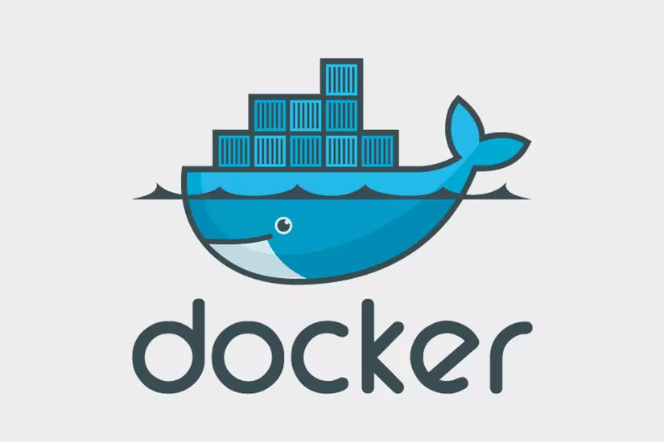
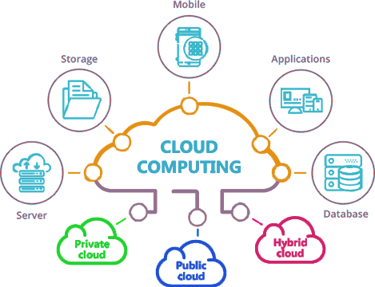
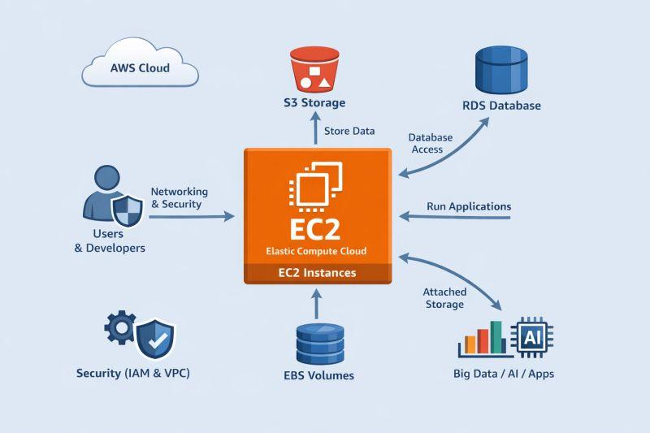

Nền tảng mô phỏng điện toán đám mây
MyMiniCloud – Home
Server 1
Khám phá cách các server Nginx, Flask và MariaDB phối hợp trong một hệ thống Cloud thu nhỏ chạy bằng Docker.
Bài viết nổi bật
Ba chủ đề giúp hiểu và triển khai MyMiniCloud.

Cloud căn bản
Cloud Computing cơ bản
On-demand, elasticity, các mô hình IaaS, PaaS và SaaS.
Đọc bài viết